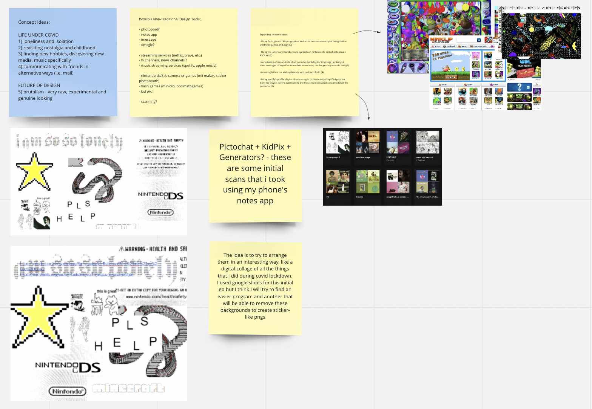
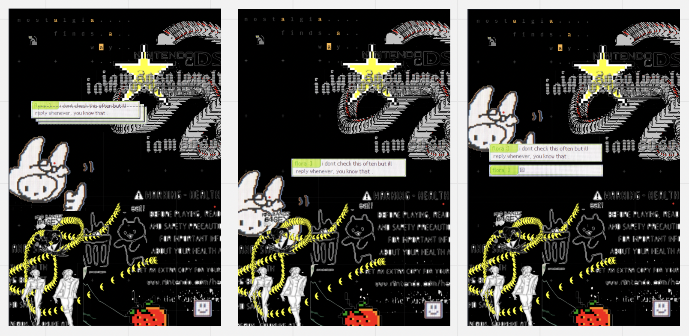
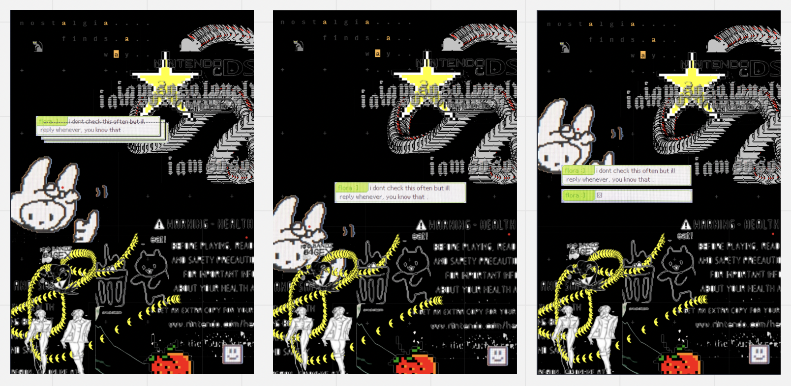
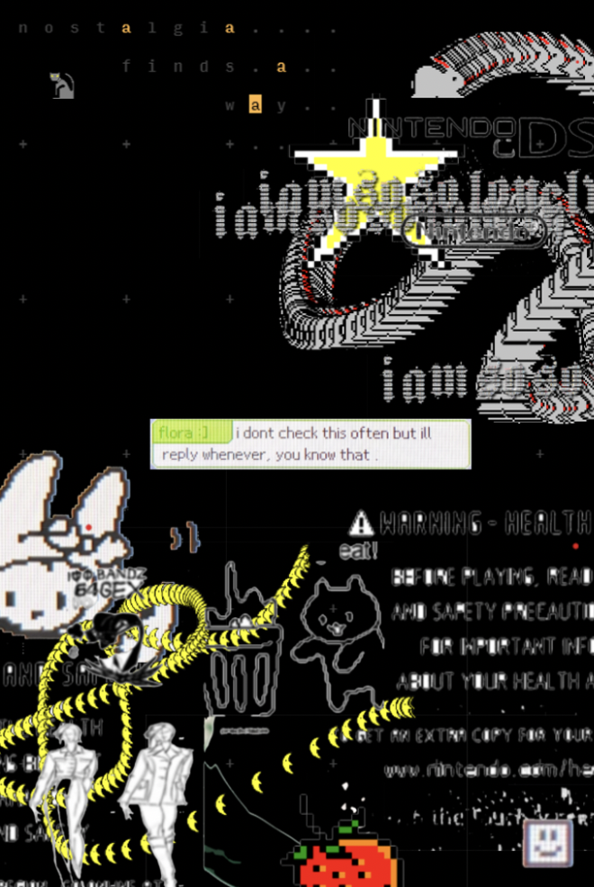

✿ flora tam
back to indexproject 01 - confounding tools
prompt
this project asked us to design a poster about one, life under covid or two, how we see the future of design with a twist - we were not allowed to use software explicity intended for design!
concept
i chose to form my piece around my revisiting of childhood nostalgia and ongoing isolation throughout the covid lockdowns, utilizing software that i employed very frequently during these bouts of loneliness.
brainstorm
i chose to form my piece around my revisiting of childhood nostalgia and ongoing isolation throughout the covid lockdowns, utilizing software that i employed very frequently during these bouts of loneliness.
drafts
throughout the project, i experimented with several programs, making several iterations and learning how to utilize these non-intentional design softwares to my advantage. there was a lot of learning through making, meaning I was very much exploring the nature of these programs in a design-focused lens, which strayed far from their intended use.
 

final
out of all three, this is the final iteration i chose, as i thought the composition was the strongest and it combined all the parts of my experience in the most effective way to communicate my message, i believe.
